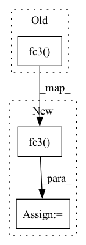

Pattern ID :24927

Before Change
d2 = F.relu(self.fc1_2(log_pi))
d = torch.cat([d1, d2], 1)
d = self.fc2(d)
d = self.fc3(d)
return d
class DWBC(object):
After Change
d2 = F.relu(self.fc1_2(log_pi))
d = torch.cat([d1, d2], 1)
d = F.relu(self.fc2(d))
d = F.sigmoid(self.fc3(d))
d = torch.clip(d, 0.1, 0.9)
return d
In pattern: SUPERPATTERN
Frequency: 4
Non-data size: 3
Instances
Fragment ID: 76742689
Project Name: ryanxhr/dwbc
Commit Name: b3791e408af7125fde12cda1cdeaefbaa400aacc
Time: 2022-06-30
Author: xuhaoran8@jd.com
File Name: algos/DWBC.py
M Class Name: Discriminator
N Class Name: Discriminator
M Method Name: forward(4)
N Method Name: forward(4)
M Parent Class: nn.Module
N Parent Class: nn.Module
M File Name: algos/DWBC.py
N File Name: algos/DWBC.py
M Start Line: 93
M End Line: 95
N Start Line: 81
N End Line: 84
'>
Before Change
def forward(self, belief, state):
hidden = self.act_fn(self.fc1(torch.cat([belief, state], dim=1)))
hidden = self.act_fn(self.fc2(hidden))
reward = self.fc3(hidden).squeeze(dim=1)
return Normal(reward,1)
After Change
x = torch.cat([belief, state],dim=1)
hidden = self.act_fn(self.fc1(x))
hidden = self.act_fn(self.fc2(hidden))
hidden = self.act_fn(self.fc3(hidden))
reward = self.fc4(hidden).squeeze(dim=1)
return reward
'>
Fragment ID: 76742692
Project Name: yusukeurakami/dreamer-pytorch
Commit Name: 7467759c705253861580a687728632db026dee73
Time: 2020-06-15
Author: you@example.com
File Name: models.py
M Class Name: ValueModel
N Class Name: ValueModel
M Method Name: forward(3)
N Method Name: forward(3)
M Parent Class: jit.ScriptModule
N Parent Class: jit.ScriptModule
M File Name: models.py
N File Name: models.py
M Start Line: 158
M End Line: 161
N Start Line: 160
N End Line: 165
'>
Before Change
result = self.act1(self.fc1(all_states))
combined = t.cat([result, acts], dim=1)
result = self.act2(self.fc2(combined))
return self.fc4(self.act3(self.fc3(result)))
if __name__ == "__main__":
After Change
state_action = t.cat([all_states, action], dim=1)
q = t.relu(self.fc1(state_action))
q = t.relu(self.fc2(q))
q = self.fc3(q)
return q
if __name__ == "__main__":
'>
Fragment ID: 76742687
Project Name: iffix/machin
Commit Name: e48eb313f904f75c9b561322c743520f4a1250b5
Time: 2020-04-22
Author: hanhanmumuqq@163.com
File Name: mains/main_mcarrier_maddpg.py
M Class Name: Critic
N Class Name: Critic
M Method Name: forward(4)
N Method Name: forward(4)
M Parent Class: nn.Module
N Parent Class: nn.Module
M File Name: mains/main_mcarrier_maddpg.py
N File Name: mains/main_mcarrier_maddpg.py
M Start Line: 65
M End Line: 69
N Start Line: 61
N End Line: 68
'>
Before Change
state_action = t.cat([all_states, action], dim=1)
q = t.relu(self.fc1(state_action))
q = t.relu(self.fc2(q))
q = self.fc3(q)
return q
if __name__ == "__main__":
After Change
state_action = t.cat([all_states, action], dim=1)
q = t.relu(self.fc1(state_action))
q = t.relu(self.fc2(q))
q = t.relu(self.fc3(q))
q = self.fc4(q)
return q
'>
Fragment ID: 76742685
Project Name: iffix/machin
Commit Name: a4cc3dc8efa47c25264d73907d2e751e6c8a0818
Time: 2020-04-23
Author: hanhanmumuqq@163.com
File Name: mains/main_mcarrier_maddpg.py
M Class Name: Critic
N Class Name: Critic
M Method Name: forward(4)
N Method Name: forward(4)
M Parent Class: nn.Module
N Parent Class: nn.Module
M File Name: mains/main_mcarrier_maddpg.py
N File Name: mains/main_mcarrier_maddpg.py
M Start Line: 66
M End Line: 67
N Start Line: 67
N End Line: 69